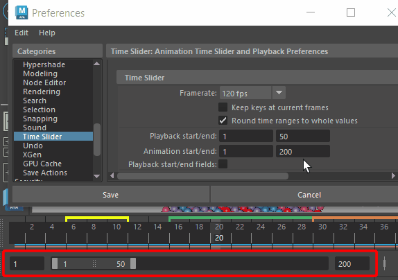
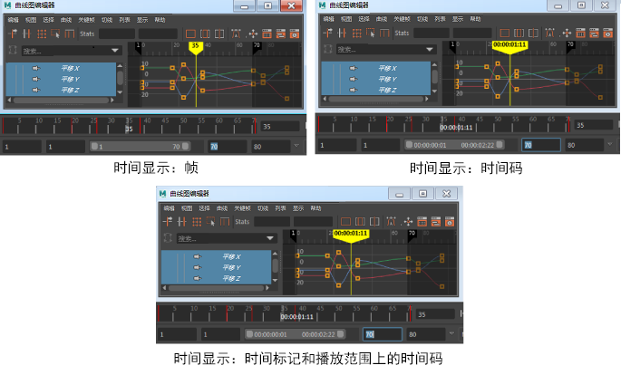
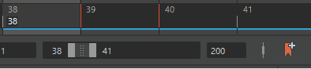
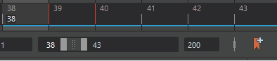

可以在“首选项(Preferences)”窗口的“时间滑块”(Time Slider)类别中设置以下首选项。
若要恢复出厂默认设置，请在此窗口中选择。请注意，这将重置“首选项”(Preferences)窗口中每个类别的首选项。
 。
。
时间滑块(Time Slider)
- 帧速率(Framerate)
- 设置当前场景的帧速率。
-
帧选择包括：2 fps、3 fps、4 fps、5 fps、6 fps、8 fps、10 fps、12 fps、15 fps、16 fps、20 fps、23.976 fps、24 fps (电影)、25 fps (PAL)、29.97 fps、29.97 df (丢帧)、30 fps、40 fps、47.952 fps、48 fps (演示)、50 fps (PAL 场)、59.94 fps、60 fps (NTSC 场)、75 fps、80 fps、100 fps、119.88 fps、120 fps、125 fps、150 fps、200 fps、240 fps、250 fps、300 fps、375 fps、400 fps、500 fps、600 fps、750 fps、1200 fps、1500 fps、2000 fps、3000 fps、6000 fps、44 100 fps 和 48 000 fps。
- 将关键帧保持在当前帧(Keep keys at current frames)
-
默认情况下，在更改当前时间单位时会修改任何现有关键帧的时间，以便保留播放计时。例如，在当前时间单位更改为 NTSC 后，在帧 12 胶片处设置的关键帧会更改为帧 15ntsc，这是因为它们都表示 0.5 秒处的关键帧。该选项处于启用状态后，最初在 12 胶片处的关键帧会处于 12ntsc 处。此选项的默认设置为禁用。当前“时间”(Time)单位更改后（如上所示），将启用该选项。
- 将时间范围舍入到整数值(Round time ranges to whole values)
-
激活此设置可在帧速率更改时保留整帧值。有时，在 Maya 中更改帧速率会将当前帧、帧范围和动画范围编号转化为十进制编号。
默认情况下，此选项处于活动状态。如果希望在更改帧速率后使帧编号保持精确（例如 24.80），请禁用此选项。
- 播放开始/结束(Playback start/end)
-
指定播放范围开始和结束时间。播放开始和结束时间指定“时间滑块”(Time Slider)播放范围。播放范围始终在动画范围内。也可以指定时间单位。请参见编辑动画首选项。
- 动画开始/结束(Animation Start/End)
-
指定动画范围开始和结束时间。动画开始和结束时间指定“范围滑块”范围。播放范围始终在动画范围内，因此更改动画开始和结束时间也会更改播放开始和结束时间。默认动画开始时间为 1.00。默认动画结束时间为 48.00。也可以指定时间单位。请参见编辑动画首选项。
- 显示播放字段(Show Playback fields)
-

播放开始/结束(Playback Start/End)字段:
- 启用此选项可在时间滑块上显示“播放开始/结束”(Playback Start/End)字段。
- Blue Pencil 帧(Blue Pencil Frames)
- 选择希望何时显示 Blue Pencil 帧：
-
- 禁用(Off)
- Blue Pencil 帧从不显示在“时间滑块”(Time Slider)上。
- 上下文活动(Context Active)
- 仅当 Blue Pencil 工具为活动工具时，“时间滑块”(Time Slider)上才会显示 Blue Pencil 帧。请参见在视口中使用 Blue Pencil 进行绘制。
- 始终(Always)
- Blue Pencil 帧始终显示在“时间滑块”(Time Slider)上。
- 关键帧标记(Key ticks)
-
指定指示关键帧的线标记如何显示在“时间滑块”(Time Slider)上。单击“无”(None)、“活动”(Active)或“通道盒”(Channel Box)。默认值为“活动”(Active)。
- 无(None)：指定不显示关键帧标记。如果有大量关键帧，同时希望改善工作区选择性能，选择“无”(None)非常有用。
- 活动(Active)：指定将显示关键帧标记，其关联关键帧可用于选择和编辑。
- 通道盒(Channel Box)：指定仅为“通道盒”(Channel Box)中的当前选定通道显示关键帧标记。如果正使用“时间滑块”(Time Slider)来编辑已设置动画对象的特定通道上的关键帧，这将非常有用。
- 智能(Smart)：可用于在显示所有关键帧标记和与特定通道关联的关键帧标记之间切换。
- 关键帧标记大小(Key tick size)
-
更改代表 Maya“时间滑块”(Time Slider)中的关键帧的标记的厚度。关键帧厚度以像素为单位。单击 1x（默认宽度）、2x（两倍宽度）或 3x（三倍宽度）。
- 时间显示(Time Display)
-
选择时间信息以何种格式显示在时间标记上：

- 帧(Frames)：在所有时间标尺、当前时间标记以及显示或接受时间的输入字段上显示帧。
- 时间码(Timecode)：在所有时间标尺、当前时间标记以及显示或接受时间的输入字段上显示视频标准时间码。
- 时间标记上的时间码和帧(Timecode and frames on Time Marker)：在时间标记上显示视频标准时间码，而在时间标尺上显示帧。这是在“时间滑块”(Time Slider)首选项的“时间滑块”(Time Slider)选项中设置“时间码”(Timecode)时的传统显示方式
注： 在时间滑块中，已舍入到小数点后第二位的任何数字旁边会显示一个星号“*”，指示该值是近似值。如果在“时间码”(Time Code)与“帧”(Frames)之间切换，或者如果在“时间滑块”(Time Slider)首选项中禁用“捕捉到整个帧”(Snap to Whole Frames)选项，有时会出现这种情况。
- 通道盒同步(Channel Box Sync)
-
- 同步时间轴显示(Sync Timeline Display)
-
启用此选项后，会将您在“通道盒”(Channel Box)中所做的选择同步到“时间滑块”(Time Slider)，以便“时间滑块”(Time Slider)只显示这些选定通道的关键帧。设置关键帧（按 S 键或选择“关键帧 > 设置关键帧”(Key > Set Key)）时，将只为通道盒(Channel Box)中选择的通道设置关键帧。如果未在“通道盒”(Channel Box)中选择任何对象，则“时间滑块”(Time Slider)会照常显示选定对象的关键帧。
- 在曲线图编辑器中同步选择(Sync Selection in Graph Editor)
-
注： 在先前版本的 Maya 中，此选项名为“同步曲线图编辑器显示”(Sync graph editor display)。
启用此选项后，会同步您在“通道盒”(Channel Box)中所做的选择，以显示在“曲线图编辑器”(Graph Editor)中。如果未在“通道盒”(Channel Box)中选择通道，则“曲线图编辑器”(Graph Editor)会照常显示选定对象的曲线。
- 当前时间指示器(Current time indicator)
- 捕捉到整个帧(Snap to whole frames)：启用此选项后，Maya 会按整数值逐步通过动画时间，捕捉到最近的整数。默认设置为启用。如果处理声音或很小的时间范围，可以关闭“捕捉到整个帧”(Snap to whole frames)以获得更加平滑的拖动。
- 自动捕捉关键帧(Auto snap keys)
-
启用此选项后，关键帧在移动或缩放时会捕捉到最近的整帧。缩放时，如果两个关键帧捕捉到同一帧，它们会合并到一个关键帧中。默认情况下，此首选项处于禁用状态。也可以在“时间滑块”(Time Slider)上单击鼠标右键，然后选择“自动捕捉关键帧”(Auto snap keys)。
注： 必须启用“当前时间指示器 捕捉到整个帧”(Current time indicator > Snap to whole frames)设置。如果“捕捉到整个帧”(Snap to whole frames)处于禁用状态，则“时间滑块”(Time Slider)不会捕捉到任何对象。移动、缩放或拖动都是如此。 - Tick 跨度(Tick Span)
- 指定在“时间滑块”(Time Slider)中放大或缩小时关键帧 Tick 的显示方式。“Tick 跨度”(Tick span)是以 24 的倍数测量的，因此可以显示每 6、12、24 或 48 帧的 Tick。此首选项的默认值为 0。
- 显示上游动画曲线中的关键帧(Show keys from upstream animation curves)
- 激活此选项会在时间滑块上显示上游动画曲线中的所有关键帧。此设置将覆盖时间滑块“动画控件”(Animation Controls)菜单中的“活动”(Active)以及“显示关键帧标记”(Display Key Ticks)卷展栏中的“来自通道盒”(From Channel Box)选项。
播放(Playback)
- 播放速度(Playback Speed)
-
指定播放场景的速度。选择“播放每一帧”(Play Every Frame)、24fps x 1、24fps x 0.5、24fps x 2 或“其他”(Other)，这将激活您可以在其中输入自定义播放速度的字段。“播放速度”(Playback speed)使用在设置首选项的“工作单位”(Working Units)部分中设置的帧速率。默认值为“播放每一帧”(Play Every Frame)。
也可以指定播放时间单位。请参见编辑动画首选项。
-
- 播放每一帧(Play every frame)
-
选定后，将播放您场景中的所有帧，在显示下一个之前更新每个。速度取决于您的工作站计算和绘制每帧所花费的时间。可以在“播放每 n 帧”字段指定播放帧增量。例如，如果播放值为 2.0，则每隔一个帧播放一次。
- 24fps x 1
-
选定后，场景将按您在设置首选项的“工作单位”(Working Units)部分中设置的帧速率播放。（在 Maya 中，默认 fps 为每秒 24 帧。）Maya 可能不显示所有帧，这取决于您工作站的功能、场景的复杂性和显示模式（例如，线框或平滑着色处理）。
- 24fps x 0.5
-
选定后，场景将按您在设置首选项的“工作单位”(Working Units)部分中设置的速度的一半播放。
- 24fps x 2
-
选定后，场景将按您在设置首选项的“工作单位”(Working Units)部分中设置的速度的两倍播放。
- 其他(Other)
-
选定后，将以“其他速度”(Other Speed)设置中指定的自定义播放速度播放场景。
- 其他速率(Other Speed)
-
仅当“播放速度”(Playback Speed)设置为“其他”(Other)时可用。
用于设置场景的自定义播放速度（每秒帧数）。例如，如果指定“其他速度”(Other Speed)值为 72，则将以 72 fps 的速度播放动画。
- 播放每 n 帧(Playback by)
-
如果将“播放速度”(Playback speed)设置为“播放每一帧”(Play Every Frame)，指定播放增量。例如，如果输入 4，Maya 将只以每四帧（或时间）的速度播放。默认值为 1.000。也可以指定播放时间单位。
- 最大播放速率(Max Playback Speed)
-
让您可以通过指定速度限值来钳制动画播放速度。当处理具有较大 CPU 活动波动水平的场景（如具有复杂粒子效果的场景）时，这将非常有用。
- 自由(Free)
-
指定无“最大播放速率”(Max Playback Speed)。
- 24 fps x 1
-
指定场景动画的总体播放速度为尽可能快，但不会超过 24 fps。
- 24 fps x 0.5
-
指定场景动画的总体播放速度为尽可能快，但不会超过 12 fps。
- 24 fps x 2
-
指定场景动画的总体播放速度为尽可能快，但不会超过 48 fps。
- 更新视图(Update View)
-
如果工作区布局包含几个视图（例如，从“面板 > 布局”(Panels > Layouts)），可以只在当前活动视图播放场景以提高性能。单击“活动”(Active)或“全部”(All)。默认值为“活动”(Active)。
-
- 活动(Active)
-
仅在当前活动视图播放场景。
- 全部(All)
-
在所有工作区视图播放场景。
- 循环(Looping)
-
指定向前播放场景时要进行的操作，然后到达播放结束时间（或者在向后播放时的播放开始时间）。单击“一次”(Once)、“往返”(Oscillate)或“连续”(Continuous)。默认为“连续”(Continuous)。
-
- 一次(Once)
-
指定只播放一次场景，然后停止。

- 往返(Oscillate)
-
指定向前（或向后）播放场景，然后向后播放（或向前）播放，直到停止播放。

- 连续(Continuous)
-
指定向前（或向后）播放场景，然后向后播放（或向前）播放，直到停止播放。

- 在步进帧时循环播放范围(Loop Play Range when stepping frames)
- 激活此选项，可在范围滑块(Range Slider)定义的范围内循环步进帧，而不是继续播放整个动画。
-

- 禁用此选项后，动画将播放到结尾后再循环播放。
- 默认情况下，此选项处于启用状态。
- 在步进关键帧时循环播放范围(Loop Play Range when stepping keyframes)
- 激活此选项，可在范围滑块(Range Slider)定义的范围内循环步进关键帧，而不是继续播放整个动画。
-

- 禁用此选项后，动画将播放到结尾后再循环播放。
- 默认情况下，此选项处于启用状态。
 （位于范围滑块旁边）快速设置循环选项。
（位于范围滑块旁边）快速设置循环选项。